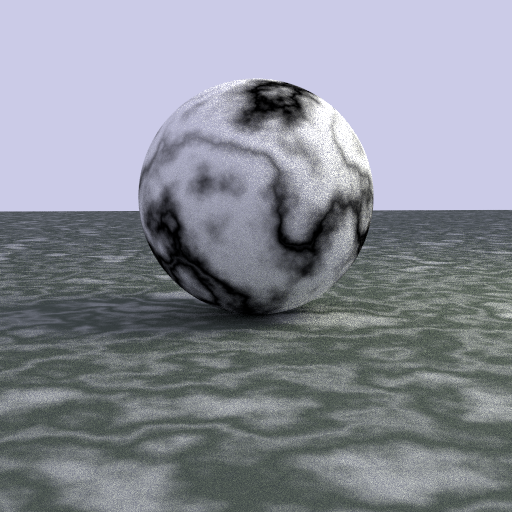

Ray Tracer in C++
Introduction

This is a semester-length project of 15668: Physics Based Rendering at CMU, where I implemented a custom ray-tracing renderer from scratch in C++ in Dartmouth Introductory Ray Tracer, a template for ray tracing education. In the final project I implemented advanced features from recent SIGGRAPH papers. Here is the full list of components I implemented.
- Ray properties and methods
- Transforms: translate, scale and rotation
- Objects: Sphere, Quads and Mesh (triangles) with corresponding properties: normal, uv...
- Materials and Microfacet BRDF Model: Lambert, Dielectric, Metal, Phong, Blinn-Phong, Oren-Nayar, Beckmann
- Sampler Algorithms: Stratified Sampling, Quasi-Monte Carlo Sampling
- Integrators: Material Integrators, next-event estimation, Multiple importance sampling
- Background Mapping
- Volumetric Rendering
- Procedural Textures
- Spectral Rendering
- Position-free Monte Carlo Integration for Layered Materials
- Position-free Monte Carlo Integration for BSSRDF
Feature Demo

MIS+NEE Integrator

Ambient Light and Background Mapping

Procedural Textures
UV Mapping

Ray Tracing Basics

Volumetric Rendering

Microfacet Surface BRDFs

BSSRDF
Layered Materials